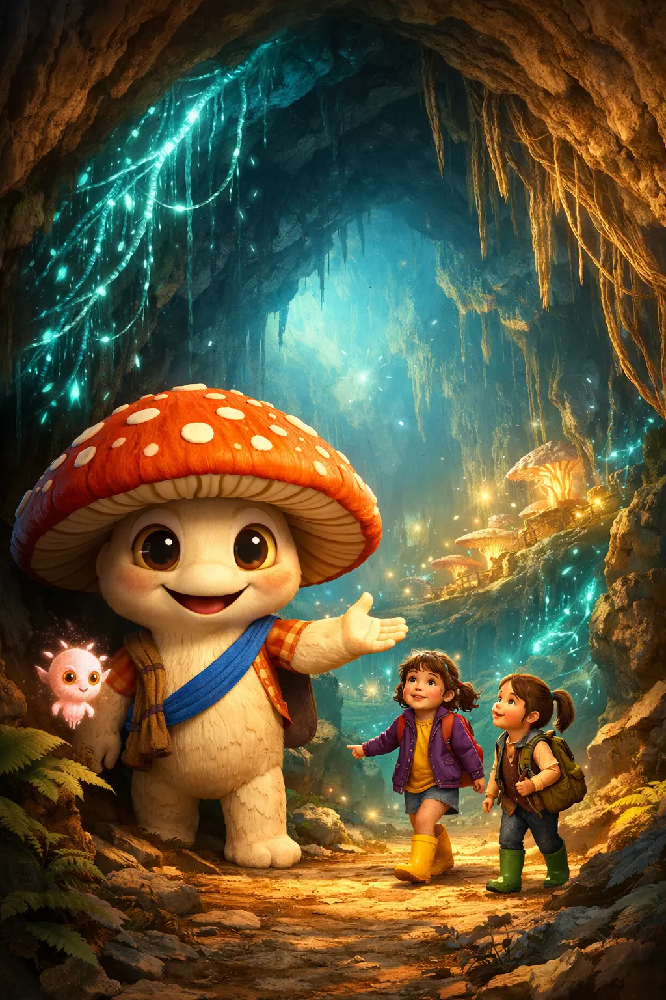

Meet the Cast
34+ characters across three biological kingdoms
View All CharactersA transmedia children's universe teaching real mycology, microbiology, and ecology through Pixar-quality characters. Nature invented the internet 450 million years before humans.

Characters spanning fungi, bacteria, and insects — plus human kids and a secret faerie teacher. Every character is based on real biology.
Mycorrhizal networks, bioluminescence, chemical signaling, symbiosis — all verified against peer-reviewed research and made irresistibly fun.
Kids get a thrilling adventure underground. Adults notice that Ms. Hawthorn might not be entirely human. The show never confirms it. Only hints.
"The old stories weren't wrong. They just didn't have microscopes."
Two kids. A mysterious teacher. A glowing fairy ring. Beneath every forest is a network older than dinosaurs, connecting every tree, sharing food, sending warnings. Scientists call it the Wood Wide Web. We call it Sillium.
Comparable to: Octonauts meets Fantastic Fungi meets Inside Out
34+ characters across three biological kingdoms
View All CharactersSix media products — two from List A, four from List B — proving this universe is built to live everywhere.
A complete production-ready screenplay. Two kids shrink into the Sillium, meet Fun-Gus, tour the network, and help Spora send her first message. Full dialogue, visual directions, and sound design.
List A — Explainer VideoTransitions from the fictional Fun-Gus world to real microscopy footage and back. All facts verified against peer-reviewed research. Designed with four built-in classroom pause points.
List B — Trading CardsEach card features five rated stats, a named special ability, a verified science fact, and a signature quote. Includes rarity tiers, set bonuses for gameplay, and full print specs.
List B — Fake ReviewsFictional reviews from professional critics, parents, kids (ages 4–10), an NSTA educator review, and social media reactions — demonstrating how the series would land across every demographic.
List B — NewsletterA complete first issue written by fungal characters. Features a story by Chanty, Spora's journal, science facts by Birdie, an "Ask Fun-Gus" Q&A, and a hands-on network-building activity.
List B — ComicSpora discovers a dying tree, can't save it alone, and rallies the entire network. Features a full-page splash of the cast converging to save a seedling. Complete with dialogue, SFX, and panel descriptions.